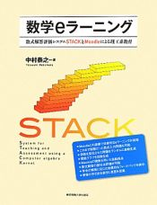

Publications
STACK is a very popular online assessment system, used by many groups in a variety of languages. STACK has been the subject of research, and has itself enabled research projects to take place. This page contains a selection of publications.
Publicity materials.
We have a booklet of case studies, and a PDF flyer about the STACK project.
We have a "Getting started with STACK" guide (Spanish).
Computer aided assessment of mathematics

Computer Aided Assessment of Mathematics, Chris Sangwin, Oxford University Press, 2013.
This book provides an Introduction to Computer Aided Assessment using STACK as the main working example.
Nakamura (2010)

Y. Nakamura, The STACK e-Learning and Assessment System for mathematics, science and engineering education through Moodle, Tokyo Denki University Press, 2010, (In Japanese) ISBN 978-4-501-54820-9.
Papers about STACK
Proceedings of the 1st International STACK Conference can be found can be found on the open access publication server Zenodo here: https://zenodo.org/communities/stack
These recent papers about STACK are a good place to start:
- C. J. Sangwin, R. Bickerton, R. (2023). Practical Online Assessment of Mathematical Proof, International Journal of Mathematical Education in Science and Technology, 53(10) doi:10.1080/0020739X.2021.1896813.
- C. J. Sangwin and I. Jones (2017). Asymmetry in student achievement on multiple choice and constructed response items in reversible mathematics processes. Educational Studies in Mathematics, 94:205-222.
- C. J. Sangwin and N. Kocher (2016). Automation of mathematics examinations. Computers and Education, 94:215-227.
A comprehensive bibliography is available here: STACK bibliography, with the entries in BiBTeX format.